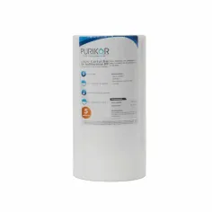
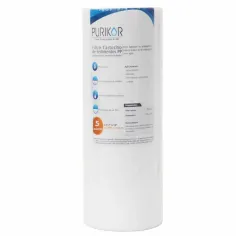
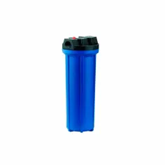
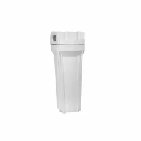
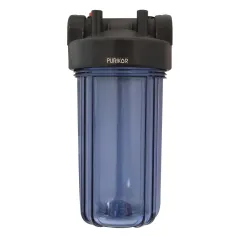
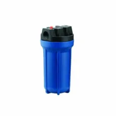
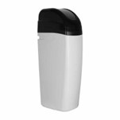

Punto de entrada
Filtros para toda la casa, instalados en la entrada principal del agua.
Filtros disponibles:
Cartuchos de filtración
-
 Cartucho de Carbón Activado en Bloque (CTO) Big Blue (10" x 4.5")
Cartucho de Carbón Activado en Bloque (CTO) Big Blue (10" x 4.5")Filtración y decloración de alto flujo. Bloque de carbón premium de 5 micras que elimina eficientemente cloro, pesticidas, COV, mal olor y sabor. Ideal para sistemas comerciales ligeros o residenciales exigentes sin sacrificar presión.
$1,499 MXN -
 Cartucho de Carbón Activado en Bloque (CTO) Big Blue (20" x 4.5")
Cartucho de Carbón Activado en Bloque (CTO) Big Blue (20" x 4.5")Máxima capacidad de absorción química. Cartucho industrial de carbón extruido (5 micras). Diseñado para altos consumos, prolonga el tiempo entre mantenimientos y asegura un agua impecable en aplicaciones comerciales o residenciales de gran escala.
$1,499 MXN -
 Cartucho Plisado de Poliéster Slim (20" x 2.5")
Cartucho Plisado de Poliéster Slim (20" x 2.5")Rendimiento superior y cartucho lavable. Filtro plisado de 5 micras que maximiza el área de contacto para retener de forma óptima tierra, lodo y óxido. Su diseño lavable reduce costos operativos y minimiza la caída de presión en líneas estándar..
$1,499 MXN -
 Cartucho Plisado de Poliéster Big Blue (20" x 4.5")
Cartucho Plisado de Poliéster Big Blue (20" x 4.5")Filtración de sedimentos ultra fina. Filtro plisado industrial con retención micrométrica de 1 micra. Ideal para atrapar micropartículas suspendidas y actuar como pretratamiento crítico de protección para sistemas UV o membranas de ósmosis..
$1,499 MXN -
 Cartucho de Polipropileno Termofusionado Slim (20" x 2.5")
Cartucho de Polipropileno Termofusionado Slim (20" x 2.5")Desbaste y prefiltración profunda. Cartucho Melt-Blown de 50 micras con estructura de densidad graduada. Retiene sólidos gruesos en la superficie y partículas medias en su interior, previniendo la saturación de las etapas posteriores.
$1,499 MXN -
 Cartucho de Carbón Activado Granular (GAC) Slim (10" x 2.5")
Cartucho de Carbón Activado Granular (GAC) Slim (10" x 2.5")Pureza y frescura garantizada. Cartucho residencial relleno de carbón granular premium que maximiza el tiempo de contacto con el agua. Diseñado específicamente para eliminar por completo el sabor y olor a cloro en sistemas bajo tarja.
$1,499 MXN -
 Cartucho de Carbón Activado Granular (GAC) Slim (20" x 2.5")
Cartucho de Carbón Activado Granular (GAC) Slim (20" x 2.5")Decloración eficiente en formato compacto. Filtro de lecho de carbón granular en diseño Slim alargado. Ideal para optimizar la retención de agentes químicos y orgánicos en sistemas comerciales medianos con espacio de instalación limitado.
$1,499 MXN -
 Cartucho de Carbón Activado Granular (GAC) Big Blue (10" x 4.5")
Cartucho de Carbón Activado Granular (GAC) Big Blue (10" x 4.5")Protección química integral para el hogar. Cartucho Big Blue de carbón granular libre de restricciones de flujo. Remueve el cloro y químicos de toda la red hidráulica residencial desde el punto de entrada principal.
$1,499 MXN -
Cartucho de Carbón Activado Granular (GAC) Big Blue (20" x 4.5")
Alto rendimiento para purificación industrial. El cartucho de carbón granular de mayor capacidad en la línea. Vital en plantas purificadoras o comercios para tratar grandes volúmenes de agua y proteger resinas o membranas contra la oxidación.
$1,499 MXN -
 Cartucho de Carbón Activado en Bloque (CTO) Slim (20" x 2.5")
Cartucho de Carbón Activado en Bloque (CTO) Slim (20" x 2.5")Acción dual: filtración y pulido. Cartucho de carbón prensado de 5 micras en formato Slim. Retiene sedimentos finos residuales mientras pule las propiedades organolépticas del agua en purificadoras comerciales compactas.
$1,499 MXN -

Cartucho de Polipropileno Termofusionado Big Blue (10" x 4.5")Retención mecánica de alta pureza. Filtro de sedimentos de 5 micras fabricado mediante termofusión, libre de aditivos químicos. Excelente estabilidad estructural para eliminar turbidez y proteger sistemas de punto de entrada.
$1,499 MXN -

Cartucho de Polipropileno Termofusionado Big Blue (20" x 4.5")El estándar industrial en control de sedimentos. Cartucho de profundidad de 5 micras para alta demanda hidráulica. Ofrece una vida útil extendida atrapando lodos, arenas y tierra en cisternas, comercios e industrias.
$1,499 MXN
-

Portacartucho Estándar Azul (10" x 2.5")Protección estructural y barrera anti-algas. Carcasa reforzada de alta resistencia para exteriores. Su cuerpo azul opaco bloquea la luz solar previniendo la fotosíntesis en el filtro. Incluye válvula de purga manual.
$1,499 MXN -

Portacartucho Estándar Blanco (10" x 2.5")Diseño estético e instalación segura. Carcasa residencial con acabado blanco limpio, ideal para purificadores bajo tarja o sistemas de ósmosis inversa. Soporta fluctuaciones de presión con total hermeticidad.
$1,499 MXN -

Portacartucho Big Blue Transparente (10" x 4.5")Inspección visual instantánea. Carcasa de alto flujo Big Blue fabricada en polímero transparente de alta resistencia. Permite monitorear el estado del cartucho y planificar los mantenimientos sin necesidad de abrir el equipo..
$1,499 MXN
Portacartucho Big Blue Azul (10" x 4.5")Robustez industrial para exteriores. Carcasa Big Blue de gran sección diseñada para soportar condiciones ambientales severas y golpes de ariete. Conexiones de alto flujo que minimizan la pérdida de presión general..
$1,499 MXN-

Suavizador de Agua de Gabinete ClásicoAdiós definitivo al sarro. Sistema automático compacto por intercambio iónico que elimina los minerales de calcio y magnesio. Protege tuberías, griferías y calentadores de incrustaciones, optimizando la suavidad del agua en el hogar.
$1,499 MXN -
 Suavizador de Agua Inteligente (Smart)
Suavizador de Agua Inteligente (Smart)Eficiencia avanzada y tecnología Smart. Suavizador de última generación con pantalla táctil e inteligencia integrada. Monitorea tus hábitos de consumo para auto-programar regeneraciones eco-eficientes, ahorrando agua y sal de manera automatizada.
$1,499 MXN
Equipos de suavización (Sistemas Completos)
Carcasas y portacartuchos

Punto de uso
Descripcion.
Filtros disponibles:
-
 Filtro de 3 etapas
Filtro de 3 etapasSistema básico de purificación que elimina sedimentos, cloro, olores y sabores desagradables del agua. Ideal para mejorar la calidad del agua potable en hogares y oficinas con un mantenimiento sencillo y económico.
$3,999 MXN -
 Filtro de 5 etapas
Filtro de 5 etapasSistema de filtración avanzado que incorpora etapas adicionales para reducir partículas más finas, compuestos químicos y contaminantes comunes. Proporciona agua de mejor sabor, olor y apariencia para consumo diario..
$8,499 MXN -
 Filtro de 6 etapas
Filtro de 6 etapasEquipo de alta eficiencia que combina múltiples procesos de filtración para remover sedimentos, cloro, metales pesados y otros contaminantes. Ofrece una mayor protección y una calidad de agua superior para toda la familia.
$599 MXN -
 Filtro de 6 etapas osmosis
Filtro de 6 etapas osmosisSistema premium que utiliza tecnología de ósmosis inversa para eliminar hasta el 99% de impurezas disueltas, sales, metales pesados, bacterias y otros contaminantes. Produce agua de excelente pureza, ideal para beber y preparar alimentos con la máxima confianza.
$599 MXN